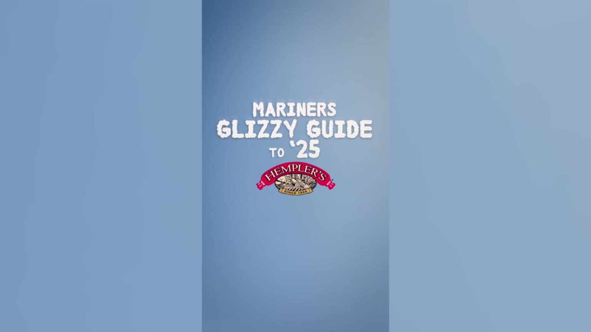

案例发生了什么
谁参与Seattle Mariners × Hempler’s / T-Mobile Park
发生节点 / 场景2024—至今；第七局后场内娱乐 / 主题票日；美国 · 西雅图
传播形式降落伞投放 / 场内奇观 / 可持续球队 IP
传播核心工作人员从上层看台抛下绑着降落伞的热狗，让 90 秒食品派送变成全场抬头欢呼的固定节目。
西雅图水手队在 T-Mobile Park 上层看台将热狗系在约 36 英寸的降落伞上，于第七局后抛向下层观众。MLB 官方报道记录了团队对降落伞尺寸、材质、投掷轨迹和食品准备流程的测试，也引用项目负责人将这段过程形容为“90 秒的纯粹快乐”。它从一次场内奇观逐步变成可反复运行的球队节目：2026 年官方又推出 Hot Dogs from Heaven 主题票与联名帽，并用“Carrots from the Clouds”愚人节版本继续扩展这个 IP。
真实执行素材
以下图片来自权利方、球队、品牌、制作方或奖项原档；按执行链完整度灵活收录，不限制固定张数，逐图保留主源链接。


MARKETING KNOWLEDGE ROUTER · 营销知识路由器
营销启发卡
用同一套卡片把日常体育案例与世界杯案例、深度文章连起来。 卡片底部按主题连接全站相关案例、经典方法与深度文章。
01核心动作
用降落伞改变普通食品派送的运动轨迹
用降落伞改变普通食品派送的运动轨迹，让所有人同时抬头寻找落点；以固定音乐、时间窗口和重复频次，把一次惊喜训练成球场记忆。
02传播与商业机制
配送变奇观
配送变奇观：产品从天而降的过程，比奖品本身更值得被观看和拍摄；稀缺落点：每个观众都知道热狗有限，却无法预判会落到哪里；节目 IP 化：固定名称、音乐与反复出现，让一次创意变成球队可持续资产。
03可复用的方法
不要只问“送什么”
不要只问“送什么”，还要设计奖品到达人群的方式；一条有悬念的移动路径本身就是内容。
适用条件与风险
- 高空抛投必须测试重量、包装、食品温度、风向、落点和看台人员安全。
- 2024 年报道与 2026 年主题票属于不同阶段，不能把后续商品化倒写成首次执行时已经存在。
资料与来源
官方资料与原始来源
MLB / Seattle Mariners2024-05-17 · Behind the Mariners’ Hot Dogs from Heaven promotion打开原始来源 ↗
Seattle Mariners2026 · Hot Dogs from Heaven Night打开原始来源 ↗
Seattle Mariners2024-07-19 · Mariners Glizzy Guide to 2025打开原始来源 ↗
来源备注首次执行细节来自 MLB 官方报道，后续主题票和内容扩展来自水手队官方页；两个阶段在正文中分开记录。